For years, lawmakers were told a simple story.
Kratom wasn’t really addictive.
Withdrawal was mild.
People could stop whenever they wanted.
The plant was being unfairly targeted by regulators who didn’t understand it.
Advocacy organizations repeated this message in legislative hearings, media interviews, social media campaigns, and lobbying efforts across the United States.
Many lawmakers believed them.
Today, the internet tells a different story.
And the evidence is not coming from government agencies, toxicologists, or addiction specialists.
It is coming from kratom users themselves.
“Has Anyone Ever Heard of It?”
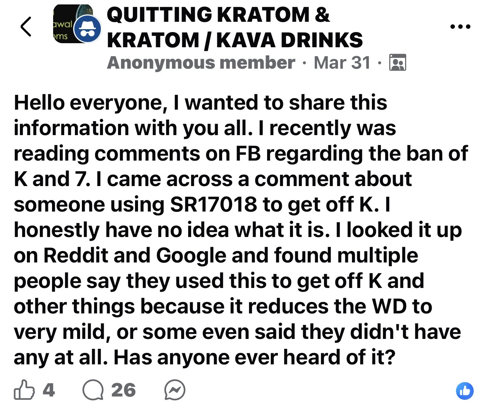
In March, a member of a Facebook group dedicated to quitting kratom described discovering something called SR-17018 while researching kratom and 7-hydroxymitragynine.
The individual had never heard of it.
After searching Reddit and Google, they found something surprising.
Not scientific papers.
Not medical guidance.
Not addiction treatment programs.
Instead, they found large numbers of people discussing how to use SR-17018 to quit kratom.
The question was no longer whether kratom causes withdrawal.
The discussion had already moved on to how to escape it.
Building an Underground Treatment Community
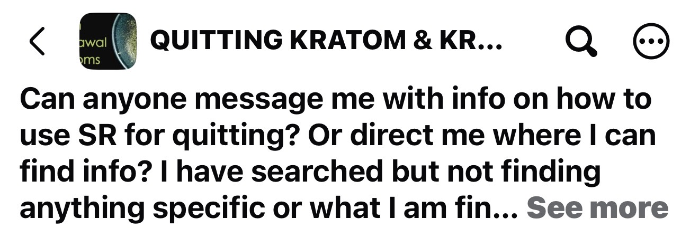
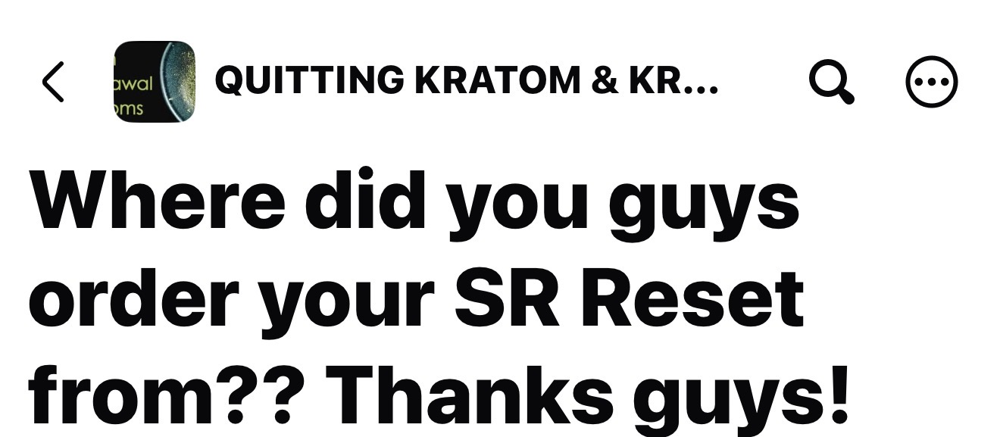
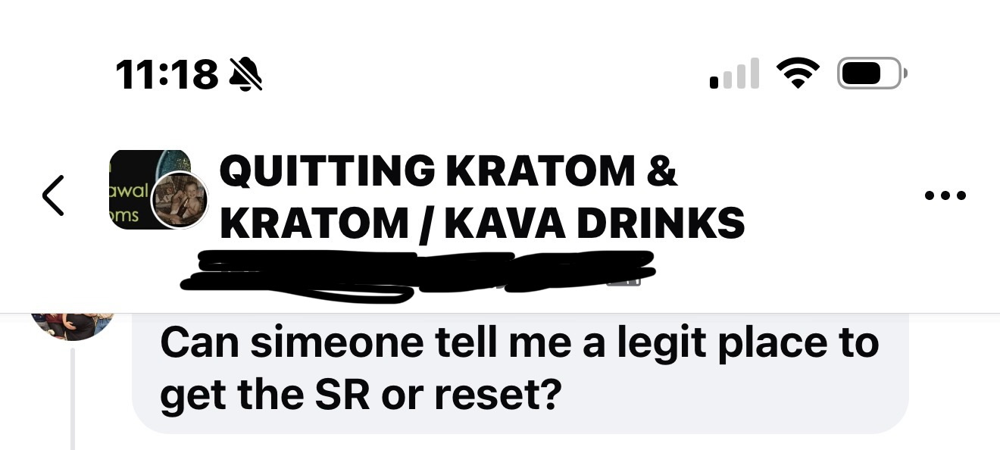
As more people learned about SR-17018, a pattern emerged.
Users weren’t asking whether kratom withdrawal existed.
They were asking:
- Where can I buy SR-17018?
- How do I use it?
- What dosing schedule works best?
- Which vendor is legitimate?
Entire conversations developed around obtaining products, designing taper schedules, and helping others stop using kratom.
The existence of these discussions creates an uncomfortable contradiction.
If whole-leaf kratom is as easy to quit as advocates claimed, why are thousands of people searching for specialized compounds to help them stop?
The New Promise
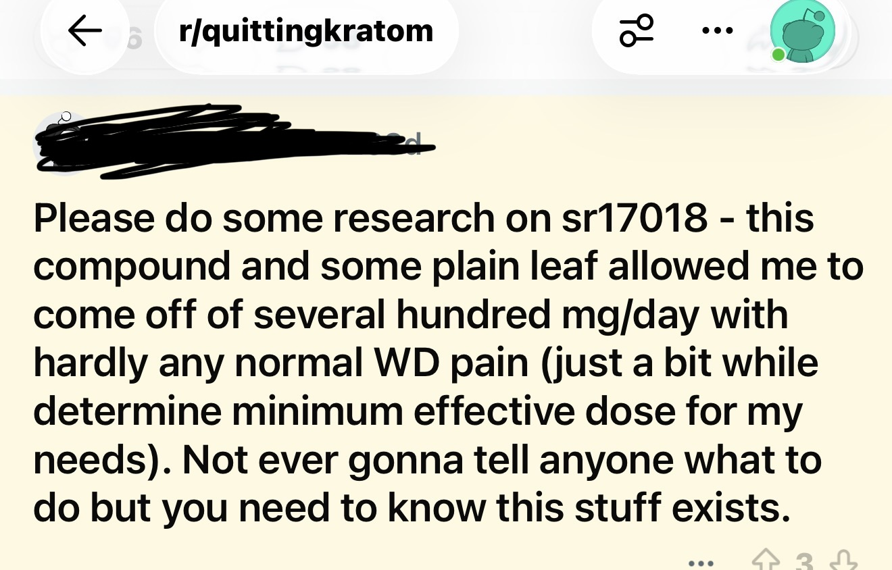

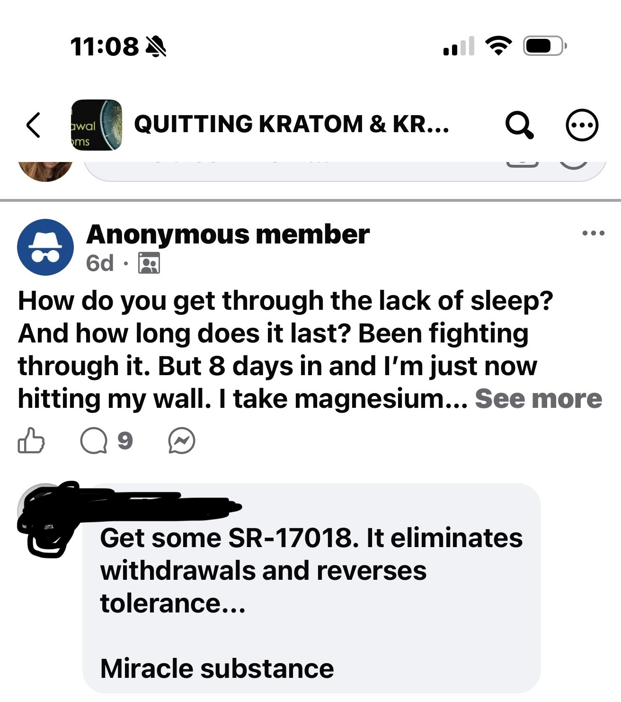
Users began describing SR-17018 in extraordinary terms.
One claimed it allowed them to stop high-dose kratom with almost no withdrawal.
Another recommended it instead of Suboxone.
A third called it a “miracle substance.”
The language should sound familiar.
Because it mirrors many of the same claims once made about kratom itself.
A new compound had appeared.
A new community had formed.
And a new set of promises was being made.
From Recovery Discussions to Consumer Products
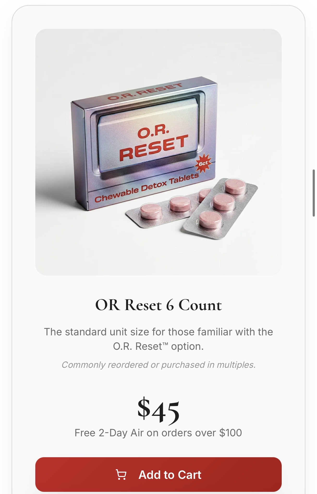
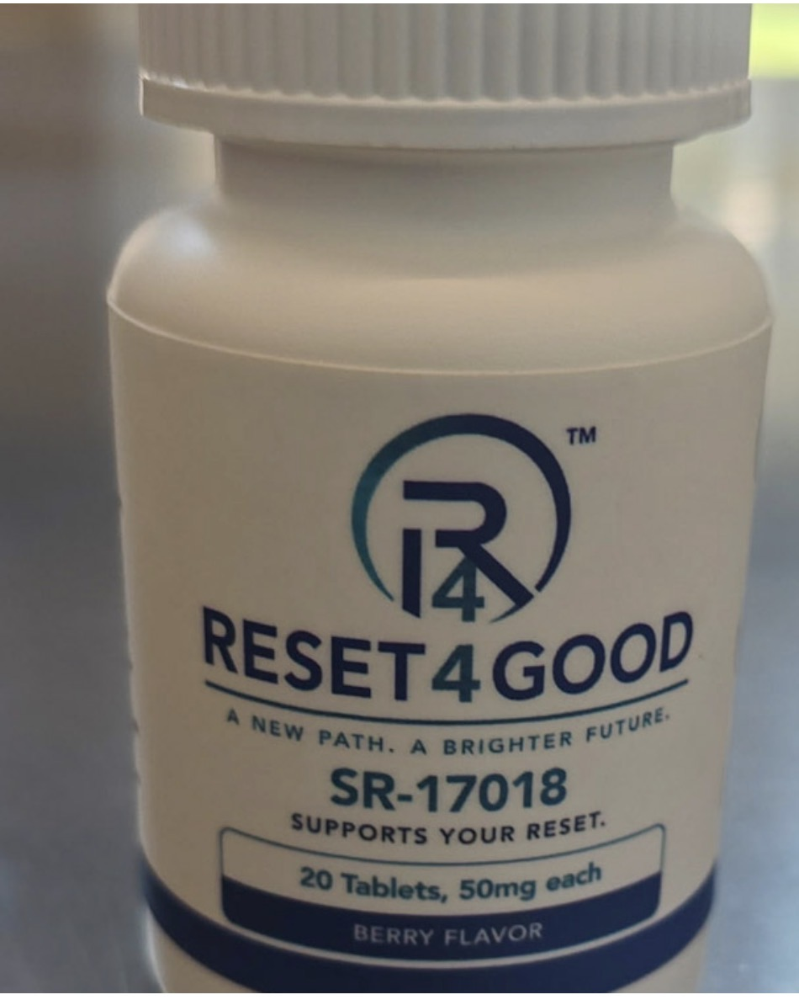
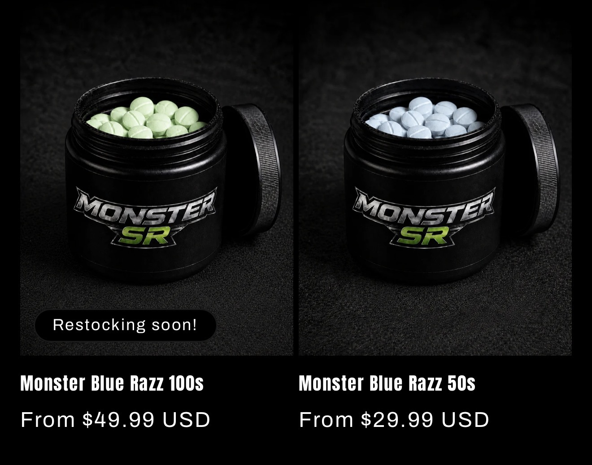
The most remarkable development is what happened next.
The demand became commercialized.
Branded products appeared online.
- “Reset.”
- “Monster SR.”
- “Reset4Good.”
Recovery-themed packaging.
Flavor options.
Retail pricing.
Online storefronts.
What began as discussions among users evolved into a market.
A market whose purpose was not helping people start kratom.
A market whose purpose was helping people stop.
Crowdsourced Detox Protocols
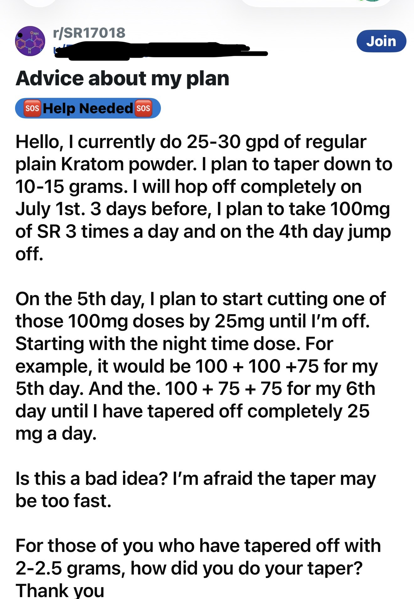
Users began sharing detailed taper schedules.
Switch from kratom to SR-17018.
Remain on SR-17018.
Slowly taper SR-17018.
Adjust doses.
Reduce symptoms.
Avoid withdrawal.
The discussions increasingly resembled addiction-treatment forums.
Not wellness forums.
Not supplement forums.
Addiction-treatment forums.
Because the central problem being discussed was withdrawal.
Then Came the Questions About SR-17018
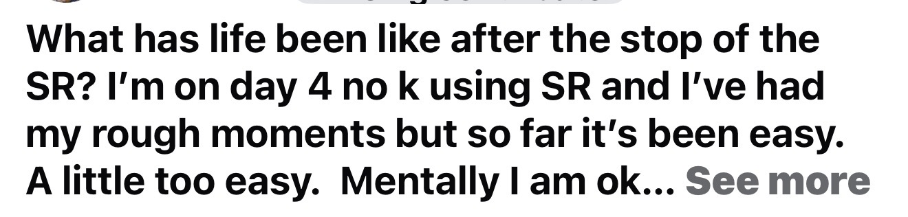
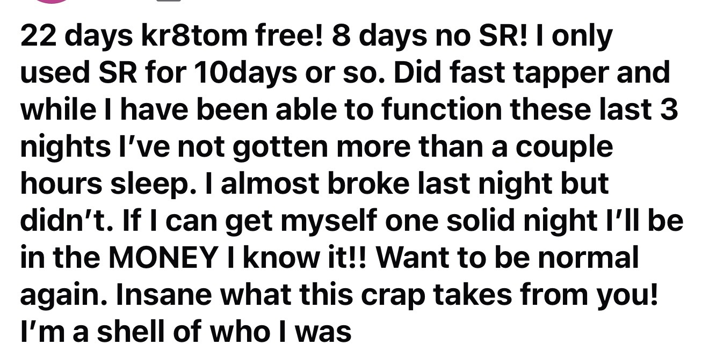
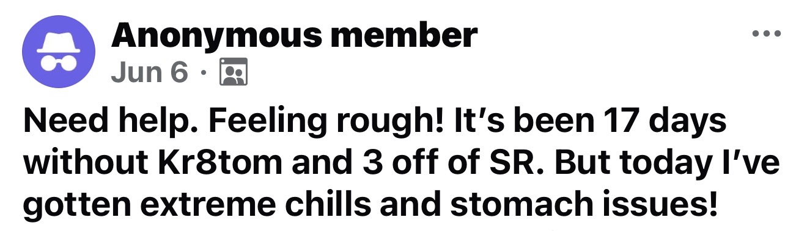
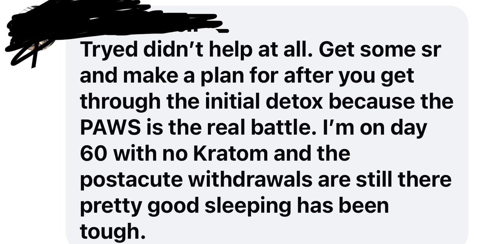
Eventually, some users began asking a new question.
What happens when you stop the thing you started taking to stop kratom?
Posts appeared discussing:
- Chills
- Gastrointestinal symptoms
- Insomnia
- Post-acute withdrawal symptoms
- Difficulty sleeping weeks after discontinuation
The irony is difficult to miss.
A community formed to escape kratom dependence.
Then parts of that same community began discussing recovery after stopping SR-17018.
What Lawmakers Were Told Versus What Happened
For years, lawmakers heard that kratom was different.
Not like opioids.
Not significantly addictive.
Not associated with serious withdrawal.
Not something that justified strict regulation.
Yet today there are:
- Facebook groups dedicated to quitting kratom
- Reddit communities discussing withdrawal management
- Detailed taper schedules
- Peer-to-peer recovery coaching
- Retail products marketed for quitting
- Entire discussions focused on obtaining compounds to reduce withdrawal symptoms
None of these things emerge in a vacuum.
They emerge when a large enough population is struggling with dependence that a market opportunity appears.
The most striking thing about SR-17018 is not the compound itself.
It is what its existence reveals.
A consumer market has emerged specifically to help people stop using whole-leaf kratom.
That market would not exist if the problem advocates described to lawmakers were the same problem users were experiencing in real life.
The story of SR-17018 is therefore not primarily a story about SR-17018.
It is a story about kratom.
Because every bottle sold, every taper schedule shared, every withdrawal discussion posted, and every desperate request for help points back to the same uncomfortable conclusion:
The people telling lawmakers that kratom dependence was insignificant helped create the conditions for an entirely new retail industry devoted to helping consumers get off kratom.